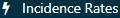

第 11 特徴分析
チャプターリード: Anthony Sena & Daniel Prieto-Alhambra
観察型の医療データベースは、さまざまな特徴に基づいて人口の変動を理解するための貴重なリソースを提供します。記述統計を用いて集団特徴を把握することは、健康および疾患の決定要因に関する仮説を生成するための重要な第一歩です。本章では特徴分析の方法について説明します：
- データベースレベルの特徴分析：データベース全体のデータプロファイルを理解するための上位レベルの要約統計を提供する。
- コホート特徴分析：集団をその累積的な医療履歴に基づいて記述する。
- 治療経路：特定の期間に受けた介入の順序を記述する。
- 発生率：リスク時間中の集団におけるアウトカムの発生率を測定する。
データベースレベルの特徴分析を除き、これらの方法は「インデックス日」と呼ばれるイベントに対して集団を記述することを目的としています。この関心集団は、10章で説明されているコホートとして定義されます。コホートは関心集団内の各人のインデックス日を定義します。インデックス日をアンカーとして、インデックス日の前の時間をベースライン時間と定義し、インデックス日以降のすべての時間をポストインデックス時間と呼びます。
特徴分析のユースケースには、疾病の自然経過、治療の利用状況、品質向上が含まれます。本章では特徴分析の方法を説明します。高血圧患者の集団を用いて、ATLASとRを使用してこれらの特徴分析タスクを実行する方法を示します。
11.1 データベースレベルの特徴分析
関心集団についての特徴分析の質問に答える前に、使用するデータベースの特徴をまず理解する必要があります。データベースレベルの特徴分析は、データベース全体をその時間的傾向および分布に関して記述することを目指します。この定量的評価は通常、以下のような質問を含みます：
- このデータベースには全体で何人が含まれていますか？
- 各人の年齢分布はどうなっていますか？
- このデータベースで観察されている期間はどれくらいですか？
- 時間の経過とともに{治療、状態、手順など}が記録・処方された人の割合はどれくらいですか？
これらのデータベースレベルの記述統計は、研究者がデータベースに欠けている可能性のあるデータを理解するのにも役立ちます。章 15では、データの質についてさらに詳しく説明します。
11.2 コホート特徴分析
コホート特徴分析は、コホート内の人々のベースラインおよびポストインデックスの特徴を記述します。OHDSIは、個人の履歴に存在するすべての状態、薬物およびデバイスの暴露、手順およびその他の臨床観察の記述統計を通じて特徴を分析します。また、インデックス日時点でのコホートメンバーの社会人口学的特性を要約します。このアプローチは関心集団の完全な要約を提供します。重要なことに、これはデータの変動に目を向けながら、欠損値を特定する可能性を考慮したコホートの完全な探索を可能にします。
コホート特徴分析の方法は、特定の治療を受けている人々における適応および禁忌の有病率を推定するための個人レベルの薬物使用研究（DUS）に使用できます。このコホート特徴分析の普及は、観察研究における推奨されるベストプラクティスであり、Strengthening the Reporting of Observation Studies in Epidemiology（STROBE）ガイドラインで詳述されています。(Elm et al. 2008)
11.3 治療経路
集団を特徴付ける他の方法としては、ポストインデックスタイムウィンドウ内の治療シーケンスを記述することが挙げられます。たとえば、(Hripcsak7329は?)、OHDSIの共通データ標準を利用して、2型糖尿病、高血圧および抑うつ症に対する治療経路を特徴付ける記述統計を作成しました。この分析アプローチを標準化することにより、Hripcsakおよび同僚は、同じ分析をOHDSIネットワーク全体で実行して、これらの関心集団の特徴を記述することができました。
経路分析は、特定の状態を診断された人々が最初の薬物処方/供給から受けた治療（イベント）を要約することを目的としています。この研究では、治療はそれぞれ2型糖尿病、高血圧および抑うつ症の診断後に記述されました。その後、各個人のイベントは集計され、各条件および各データベースに対して要約統計として視覚化されました。

図 11.1: 高血圧のためのOHDSI治療経路「サンバースト」可視化
例として、図 11.1 は高血圧治療を開始する集団を表しています。中央にある最初のリングは、最初の治療法に基づいた人々の割合を示しています。この例では、ヒドロクロロチアジドがこの集団で最も一般的な最初の治療法です。ヒドロクロロチアジドのセクションから延びるボックスは、コホート内の人々に記録された2番目および3番目の治療法を示しています。
経路分析は、集団における治療利用に関する重要な証拠を提供します。この分析から、最初の治療法として最も一般的に利用される治療法、治療を中止する人の割合、治療を変える人、または治療を強化する人の割合を記述することができます。経路分析を使用して、(Hripcsak7329はメトホルミンが糖尿病治療のために最も一般的に処方されている薬物であることを発見し?)、そこで米国内分泌学会の糖尿病治療アルゴリズムの最初の推奨事項である大規模な導入が確認されました。さらに、糖尿病患者の10%、高血圧患者の24%、抑うつ患者の11%が、いずれのデータソースにも共有されていない治療経路をたどっていたことが明らかになりました。
従来のDUS（薬物使用研究）用語では、治療経路分析は、指定された集団における一つまたは複数の薬物の使用の普及率などの集団レベルのDUS推定値および持続性やさまざまな治療法間の切り替えの測定などの個人レベルのDUSを含みます。
11.4 発生率
発生率および割合は、時間の経過とともに人口における新しい結果の発生を評価するための公衆衛生の統計です。図 11.2 は、単一の人に対する発生率の計算コンポーネントを示すことを目的としています：
図 11.2: 発生率計算コンポーネントの人単位のビュー。この例では、リスク時間はコホート開始の翌日に始まり、コホート終了時に終了する。
図 11.2 では、人がデータで観察される期間が観察開始と終了時間によって示されています。次に、個人がいくつかの適格基準を満たしてコホートに入る時点と出る時点があります。リスク時間ウィンドウは、結果の発生を理解しようとする期間を示しています。アウトカムがリスク時間内に発生した場合、それをアウトカムの発生としてカウントします。
発生率を計算するための2つの尺度があります：
\[ 発生割合 = \frac{\#\;リスク時間中に新しい結果が発生したコホート内の人数}{リスク時間を持つコホート内の人数} \]
発生割合は、リスク時間中に集団内で発生した新しい結果の割合を提供します。別の言い方をすると、これは定義された時間枠内で関心集団内で結果を得た割合を示します。
\[ 発生率 = \frac{\#\;リスク時間中に新しい結果が発生したコホート内の人数}{コホート内の人々によって提供されたリスク時間} \]
発生率は、集団の累積的なリスク時間内で新しい結果の数を測定する尺度です。リスク時間中にある人が結果を経験した場合、その人のリスク時間への寄与は結果の発生時点で停止します。累積的なリスク時間は人時間と呼ばれ、日、月または年単位で表現されます。
治療に対して計算される場合、発生割合および発生率は、特定の治療の使用の集団レベルのDUSの古典的な尺度です。 ## 高血圧患者の特性評価
世界保健機関（WHO）の高血圧に関するグローバル概要 (Who 2013) によると、高血圧の早期発見、適切な治療、および良好な管理には、健康上および経済上の大きな利益が伴います。WHOの概要は、高血圧についての概観を提供し、各国における疾病の負担を特性化しています。WHOは、地理的地域、社会経済的クラス、および性別に関する高血圧の記述統計を提供しています。
観察データソースは、WHOが行ったように高血圧集団を特性化する方法を提供します。本章の後のセクションでは、ATLASおよびRを使用してデータベースを探索し、高血圧集団を研究するためのその構成を理解する方法を探ります。その後、これらのツールを使用して、高血圧集団の自然経過および治療パターンを記述します。
11.5 ATLASにおけるデータベースの特性評価
ここでは、ACHILLES を使用して作成されたデータベース特性評価統計を調査するために、ATLASのデータソースモジュールを使用する方法を示します。まず、ATLASの左バーで をクリックして開始します。ATLASに表示される最初のドロップダウンリストで、調査するデータベースを選択します。次に、データベースの下のドロップダウンを使用してレポートを探索し始めます。これを行うには、レポートドロップダウンリストから「Condition Occurrence」を選択し、データベースに存在するすべての症状のツリーマップビジュアライゼーションを表示します：

図 11.3: Atlas Data Sources: Condition Occurrence Treemap
特定の関心のある症状を検索するには、テーブルタブをクリックして、データベース内のすべての条件のリストを表示し、個人の数、発生率、および個人ごとの記録数を確認します。上部のフィルターボックスを使用して、概念名に「hypertension」を含む項目に基づいてリストをフィルタリングできます：
図 11.4: Atlas Data Sources: Conditions with “hypertension” found in the concept name
特定の症状の詳細なドリルダウンレポートを表示するには、行をクリックします。この場合、「essential hypertension」を選択して、選択された症状の時系列および性別別の傾向、月別の発生率、症状との共記録タイプ、および診断の初回発生時の年齢の内訳を確認します：
図 11.5: Atlas Data Sources: Essential hypertension drill down report
高血圧概念の存在および時間の経過に伴う傾向についてデータベースの特性を確認した後、高血圧患者の治療に使用される薬剤を調査することもできます。これを行うには、同じ手順に従い、RxNormの成分に要約された薬剤の特性を確認するために「Drug Era」レポートを使用します。興味のある項目をレビューするためにデータベース特性を探索した後、高血圧者を特性化するためのコホートの構築を進める準備が整います。 ## ATLASにおけるコホート特性分析
ここでは、ATLASを使用して複数のコホートの大規模な特性分析を行う方法を示します。左側のバーにある をクリックし、新しい特性分析を作成します。分析に名前を付け、ボタンを使用して保存します。
をクリックし、新しい特性分析を作成します。分析に名前を付け、ボタンを使用して保存します。
11.5.1 デザイン
特性分析には、少なくとも1つのコホートと少なくとも1つの特性が必要です。この例では、2つのコホートを使用します。最初のコホートでは、高血圧治療を開始日とし、その前の1年間に少なくとも1つの高血圧診断を受けた人々を定義します。また、このコホートに属する人々が治療開始後少なくとも1年間観察期間を持つことを要求します（附録 22.6）。2つ目のコホートは、最初のコホートと同様ですが、1年間の代わりに少なくとも3年間の観察期間を必要とします（附録 22.7）。
コホート定義
図 11.6: 特性設計タブ - コホート定義の選択
コホートは既にATLASで作成されていると仮定しています（Chapter 10を参照）。をクリックし、図11.6に示すようにコホートを選択します。次に、これらのコホートを特性化するために使用する特性を定義します。
特性選択
ATLASにはOMOP CDMにモデル化された臨床領域全体で特性分析を行うための約100のプリセット特性分析が付属しており、各ターゲットコホートに対して臨床観察の集約および要約機能を提供します。これらの計算は、コホートのベースラインおよびポストインデックス特性を説明するための潜在的に数千の特性を提供します。ATLASは、各コホートの特性分析を行うために、OHDSIのFeatureExtraction Rパッケージを利用しています。次のセクションでは、FeatureExtractionとRの使用について詳しく説明します。
をクリックして、特性を選択します。以下は、これらのコホートを特性化するために使用する特性のリストです：
図 11.7: 特性設計タブ - 特性選択
上図は、説明と共に選択された特性のリストを示しています。名前が「Demographics」で始まる特性は、コホート開始日における各人の人口統計情報を計算します。ドメイン名（例：Visit, Procedure, Condition, Drugなど）で始まる特性は、そのドメインにおけるすべての記録された観察を特性化します。各ドメイン特性には4つの選択肢があります：
- Any time prior: コホート開始前のすべての利用可能な時間を使用します。
- Long term: コホート開始日までの365日。
- Medium term: コホート開始日までの180日。
- Short term: コホート開始日までの30日。
11.5.2 実行
特性分析のデザインが完了したら、環境内の1つ以上のデータベースに対してこのデザインを実行できます。実行タブに移動し、Generateボタンをクリックしてデータベースで分析を開始します：

図 11.9: 特性設計の実行 - CDMソース選択
分析が完了したら、「All Executions」ボタンをクリックしてレポートを表示し、実行リストから「View Reports」を選択します。あるいは、「View latest result」をクリックして、最後に実行された結果を表示することもできます。
11.5.3 結果
図 11.10: 特性結果 - 過去1年間の疾患発生
結果は、選択された各コホートの異なる特性の表形式のビューを提供します。図11.10では、コホート開始日の前の365日間に存在するすべての条件の概要が提供されています。各共変量には、コホートごとおよび定義した女性サブグループごとのカウントと割合が表示されています。
検索ボックスを使用して結果をフィルタリングし、「心房細動」が履歴にある人々の割合を確認することで、集団でどのような心血管関連診断が観察されるかを理解しようとしました。「Explore」リンクをクリックして新しいウィンドウを開き、単一コホートの概念に関する詳細を表示します（図@ref(fig:atlasCharacterizationResultsExplore）に示すように）。

図 11.11: 特性結果 - 単一概念の探索
コホートのすべての条件概念を特性化したので、「explore」オプションを使用して、選択された概念（この場合は心房細動）のすべての先祖および子孫概念のビューを有効にします。この探索により、高血圧のある人々に現れる可能性のある他の心疾患を探索するために概念の階層をナビゲートすることができます。要約ビューと同様に、カウントと割合が表示されます。
この特性結果を使用して、アンチ高血圧治療に禁忌のある条件（例：血管浮腫）を見つけることもできます。これを行うには、上記と同じ手順を実行しますが、今回は「edema」を検索します（図@ref(fig:atlasCharacterizationResultsContra）を参照）。
図 11.12: 特性結果 - 禁忌条件の探索
再度、「explore」機能を使用して、高血圧集団における浮腫の特性を見て血管浮腫の有病率を見つけます：

図 11.13: 特性結果 - 禁忌条件の詳細を探索
ここでは、アンチ高血圧薬を開始する前の1年に血管浮腫の記録がある集団の一部が見つかりました。
図 11.14: 各コホートとサブグループの年齢特性結果
ドメイン共変量は、コホート開始前の時間枠にコードの記録が存在したかどうかを示す二元指標を使用して計算されますが、一部の変数はコホート開始時の年齢のように連続変数として提供されます。上の例では、カウント、平均年齢、中央値、標準偏差といった形で表現された2つのコホートの年齢を示しています。
11.5.4 カスタム特性の定義
プリセット特性に加えて、ATLASはユーザー定義のカスタム特性をサポートしています。これを行うには、左側のメニューのCharacterizationをクリックし、Feature Analysisタブをクリックして、New Feature Analysisボタンをクリックします。カスタム特性に名前を付け、ボタンを使用して保存します。
この例では、ACE阻害剤の薬歴がコホート開始後にあるコホート内の人数を特定するカスタム特性を定義します：

図 11.15: ATLASでのカスタム特性定義
上で定義した基準は、コホート開始日に適用されることを前提としています。基準を定義して保存したら、前のセクションで作成した特性設計にこの基準を適用できます。特性設計を開き、Feature Analysisセクションに移動します。ボタンをクリックし、メニューから新しいカスタム特性を選択します。これで、特性設計の特性リストに表示されます。前述のように、このデザインをデータベースに対して実行して、このカスタム特性の特性分析を生成することができます：
図 11.16: カスタム特性結果表示
11.6 Rでのコホートの特徴抽出
私たちはRを使用してコホートを特徴づけることもできます。このセクションでは、OHDSI RパッケージであるFeatureExtractionを使用して、高血圧コホートのベースライン機能（共変量）を生成する方法について説明します。FeatureExtractionは、3つの方法で共変量を構築する機能を提供します。
- デフォルトの共変量セットを選択する
- 事前に指定された分析セットから選択する
- カスタム分析セットを作成する
FeatureExtractionは、個人ベースの特徴と集計された特徴の2つの異なる方法で共変量を作成します。個人ベースの特徴は機械学習アプリケーションで有用です。この章では、興味のあるコホートを説明するためのベースライン共変量を生成するために有用な集計された特徴の使用に焦点を当てます。さらに、事前に指定された分析とカスタム分析という2つの方法で共変量を構築する方法に焦点を当て、デフォルトのセットを使用する方法は読者への課題とします。
11.6.1 コホートの生成
最初に、特徴を抽出するためにコホートを生成する必要があります。コホートの生成は、Chapter 10で説明されています。この例では、高血圧に対して一次治療を開始し、1年間のフォローアップを行う人々を使用します（Appendix 22.6）。他のコホートの特徴づけはAppendix 22として残します。コホートがscratch.my_cohortsというテーブルにコホート定義IDが1で生成されていることを仮定します。
11.6.2 データ抽出
まず、Rにサーバーへの接続方法を指示する必要があります。FeatureExtractionはDatabaseConnectorパッケージを使用し、createConnectionDetailsという関数を提供します。さまざまなデータベース管理システム（DBMS）に必要な特定の設定については、?createConnectionDetailsを参照してください。例えば、次のコードでPostgreSQLデータベースに接続できます：
library(FeatureExtraction)
connDetails <- createConnectionDetails(dbms = "postgresql",
server = "localhost/ohdsi",
user = "joe",
password = "supersecret")
cdmDbSchema <- "my_cdm_data"
cohortsDbSchema <- "scratch"
cohortsDbTable <- "my_cohorts"
cdmVersion <- "5"最後の4行は、cdmDbSchema、cohortsDbSchema、cohortsDbTable変数、およびCDMバージョンを定義します。これらを使用して、CDM形式のデータがどこにあるか、興味のあるコホートがどこに作成されたか、および使用されるCDMバージョンをRに通知します。Microsoft SQL Serverの場合、データベーススキーマはデータベースとスキーマの両方を指定する必要があることに注意してください。したがって、例えばcdmDbSchema <- "my_cdm_data.dbo"となります。
11.6.3 事前に指定された分析の使用
createCovariateSettings関数は、ユーザーが多くの定義済みの共変量から選択できるようにします。利用可能なオプションの概要については、?createCovariateSettingsを参照してください。例を示します：
settings <- createCovariateSettings(
useDemographicsGender = TRUE,
useDemographicsAgeGroup = TRUE,
useConditionOccurrenceAnyTimePrior = TRUE)これにより、性別、年齢（5年ごとの年齢グループ）、およびコホート開始日までの期間に観察された各概念についての二進共変量が作成されます。
多くの事前に指定された分析は、短期、中期、長期の時間枠を参照しています。デフォルトでは、これらの枠は次のように定義されています：
- 長期: コホート開始日を含む365日前まで
- 中期: コホート開始日を含む180日前まで
- 短期: コホート開始日を含む30日前まで
ただし、ユーザーはこれらの値を変更できます。例を示します：
settings <- createCovariateSettings(useConditionEraLongTerm = TRUE,
useConditionEraShortTerm = TRUE,
useDrugEraLongTerm = TRUE,
useDrugEraShortTerm = TRUE,
longTermStartDays = -180,
shortTermStartDays = -14,
endDays = -1)これにより、長期の枠はコホート開始日を含まない180日前まで、短期の枠はコホート開始日を含まない14日前までに再定義されます。
また、どの概念IDを使用するかしないかを指定することもできます：
settings <- createCovariateSettings(useConditionEraLongTerm = TRUE,
useConditionEraShortTerm = TRUE,
useDrugEraLongTerm = TRUE,
useDrugEraShortTerm = TRUE,
longTermStartDays = -180,
shortTermStartDays = -14,
endDays = -1,
excludedCovariateConceptIds = 1124300,
addDescendantsToExclude = TRUE,
aggregated = TRUE)上記すべての例について、「aggregated = TRUE」の使用は、FeatureExtractionに要約統計を提供することを指示します。このフラグを除外すると、コホート内の各個人の共変量が計算されます。
11.6.4 集計された共変量の作成
次のコードブロックは、コホートの集計統計を生成します：
covariateSettings <- createDefaultCovariateSettings()
covariateData2 <- getDbCovariateData(
connectionDetails = connectionDetails,
cdmDatabaseSchema = cdmDatabaseSchema,
cohortDatabaseSchema = resultsDatabaseSchema,
cohortTable = "cohorts_of_interest",
cohortId = 1,
covariateSettings = covariateSettings,
aggregated = TRUE)
summary(covariateData2)出力は次のようになります：
## CovariateData Object Summary
##
## Number of Covariates: 41330
## Number of Non-Zero Covariate Values: 4133011.6.5 出力形式
集計されたcovariateDataオブジェクトの主なコンポーネントは、二進および連続的な共変量に対してそれぞれcovariatesおよびcovariatesContinuousです：
11.6.6 カスタム共変量
FeatureExtractionは、カスタム共変量を定義および利用する能力も提供します。これについての詳細は高度なトピックであり、ユーザードキュメントに記載されています：http://ohdsi.github.io/FeatureExtraction/ ## ATLASにおけるコホートパスウェイ分析
パスウェイ分析の目標は、1つ以上の興味のあるコホート内で治療がどのように順序づけられているかを理解することです。適用される方法は@Hripcsak7329によって報告された設計に基づいています。これらの方法は一般化され、ATLASのCohort Pathwaysという機能に組み込まれました。
コホートパスウェイの目的は、1つ以上のターゲットコホートのコホート開始日以降のイベントを要約する分析機能を提供することです。そのために、対象となる人口の臨床イベントを特定するためのイベントコホートと呼ばれるコホートセットを作成します。これがターゲットコホート内の人物に対してどのように見えるかを例として示します。
図 11.17: 単一の人物におけるパスウェイ分析の文脈
図 11.17 では、その人物が開始日と終了日が定義されたターゲットコホートの一部であることを示しています。その後、番号付きの線分は、その人物が特定の期間、イベントコホートとしても特定される場所を示しています。イベントコホートは、CDMに表された任意の臨床イベントを記述することができるため、単一のドメインまたは概念に対してパスウェイを作成する必要はありません。
まず、ATLASの左側のバーで をクリックして、新しいコホートパスウェイスタディを作成します。説明的な名前を提供し、保存ボタンを押します。
11.6.7 設計
まず、1年および3年のフォローアップ付きの高血圧の初回治療を開始するコホートを引き続き使用します（Appendix 22.6, 22.7）。ボタンを使用して2つのコホートをインポートします。
図 11.18: ターゲットコホートを選択したパスウェイ分析
次に、興味のある各一線級降圧薬のイベントコホートを作成して、イベントコホートを定義します。まず、ACE阻害剤の使用者のコホートを作成し、コホートの終了日を連続投与の終了日と定義します。同様に他の8つの降圧薬のコホートも作成し、これらの定義はAppendix 22.8-22.16に記載してあります。完了したら、 ボタンを使用して、これらをパスウェイデザインのイベントコホートセクションにインポートします。

図 11.19: 初回一線級降圧治療を開始するためのイベントコホート
完了すると、設計は上記のようになるはずです。次に、いくつかの追加の分析設定を決定する必要があります：
- 組み合わせウィンドウ: この設定では、イベント間の重複がイベントの組み合わせと見なされる日数の期間を定義できます。たとえば、2つのイベントコホート（イベントコホート1およびイベントコホート2）で表される2つの薬が組み合わせウィンドウ内で重複する場合、パスウェイアルゴリズムはそれらを「イベントコホート1 + イベントコホート2」として組み合わせます。
- 最小セル数: この数未満の人数のイベントコホートは、プライバシーを保護するために出力から除外されます。
- 最大経路長: 分析の対象となる一連のイベントの最大数を指します。
11.6.8 実行
パスウェイ分析の設計が完了すると、環境内の1つ以上のデータベースに対してこの設計を実行できます。これは、ATLASでのコホートの特徴付けで説明したのと同じ方法で機能します。完了したら、分析結果を確認できます。
11.6.9 結果の表示

図 11.20: パスウェイ結果の凡例とサンバーストビジュアライゼーション
パスウェイ分析の結果は3つのセクションに分かれています：凡例セクションでは、ターゲットコホートの総人数と、パスウェイ分析で1つ以上のイベントがあった人数が表示されます。その下には、サンバーストプロットの中央セクションに表示される各コホートのカラーコードが表示されます。
サンバーストプロットは、時間の経過に伴うさまざまなイベントパスウェイを表すビジュアライゼーションです。プロットの中心はコホートのエントリを表しており、最初のカラーディングは各イベントコホートにいる人々の割合を示しています。例では、円の中心は一線級治療を開始した高血圧者を示しています。その後、サンバーストプロットの最初のリングは、イベントコホート（例えば、ACE阻害剤、アンジオテンシン受容体遮断剤など）で定義された一線級治療を開始した人々の割合を示します。次のリングセットは、特定のイベントシーケンスにおいて2番目のイベントコホートを示します。データ内で2番目のイベントコホートが観察されない人々の割合は、リングの灰色の部分で表されます。
図 11.21: 経路の詳細を表示するパスウェイ結果
サンバーストプロットのセクションをクリックすると、右側に経路の詳細が表示されます。ここでは、ターゲットコホート内の最も多くの人々がACE阻害剤で一線級治療を開始し、そのグループから少数の人々がチアジド系利尿薬を開始していることがわかります。 ## ATLAS における発生率分析
発生率計算では、ターゲットコホート内の人々のうち、リスク期間中にアウトカムコホートを経験した人を記述します。ここでは、ACE阻害薬 (ACEi) およびチアジド系およびチアジド様利尿薬 (THZ) の新規使用者における血管浮腫 (Angioedema) および急性心筋梗塞 (AMI) のアウトカムを特徴づけるための発生率分析を設計します。これらのアウトカムを、薬物に曝露されている期間 (TAR) 中に評価します。さらに、ターゲットコホート (ACEi および THZ) への曝露中に新規のアンジオテンシン受容体拮抗薬 (ARB) 使用の発生率を測定するために、ARB の使用アウトカムを追加します。このアウトカム定義は、ターゲット集団の中で ARB の利用方法を理解するためのものです。
始めるには、ATLAS の左バーにある  をクリックして新しい発生率分析を作成します。説明的な名前を提供し、保存ボタン を押します。
11.6.10 設計
本例で使用されるコホートは、既に ATLAS に作成されていると仮定します (Chapter (ref?)(Cohorts) で説明)。付録には、ターゲットコホート (Appendix (ref?)(AceInhibitorsMono), (ref?)(ThiazidesMono)) およびアウトカムコホート (Appendix (ref?)(Angioedema), (ref?)(Ami), (ref?)(ARBUse)) の完全な定義が提供されています。
図 11.22: ターゲットおよびアウトカム定義の発生率。
定義タブで、 New users of ACE inhibitors コホートと New users of Thiazide or Thiazide-like diuretics コホートを選択します。ダイアログを閉じて、これらのコホートが設計に追加されたことを確認します。次に、アウトカムコホートを追加するためにクリックし、ダイアログボックスから acute myocardial infarction events 、 angioedema events 、および Angiotensin receptor blocker (ARB) use のアウトカムコホートを選択します。再びウィンドウを閉じて、これらのコホートが設計のアウトカムコホートセクションに追加されたことを確認します。
図 11.23: ターゲットおよびアウトカム定義の発生率。
次に、分析のリスク時間枠を定義します。上に示すように、リスク時間枠はコホートの開始日および終了日と相対しています。ここでは、ターゲットコホートの開始日の翌日をリスク時間枠の開始として定義します。次に、リスク時間枠をコホートの終了日に終了するよう定義します。この場合、ACEi および THZ コホートの定義には、薬物曝露が終了する時点をコホート終了日としています。
ATLAS では、分析仕様の一部としてターゲットコホートを層化する方法も提供されています:
図 11.24: 女性のための発生率層定義。
これを行うには、[新しい層化基準] ボタンをクリックし、Chapter 11 で説明されている手順に従います。設計が完了したので、一つ以上のデータベースに対して設計を実行に移ることができます。
11.6.11 実行
[生成] タブをクリックし、  ボタンをクリックして、分析を実行するデータベースの一覧を表示します:
ボタンをクリックして、分析を実行するデータベースの一覧を表示します:

図 11.25: 発生率分析実行。
一つ以上のデータベースを選択し、[生成] ボタンをクリックして、設計で指定されたターゲットとアウトカムのすべての組み合わせを分析するために分析を開始します。
11.6.12 結果の表示
生成タブでは、画面の上部でターゲットおよびアウトカムを選択して結果を表示することができます。このすぐ下には、分析で使用された各データベースの発生率のサマリーが表示されます。
それらのドロップダウンリストから ACEi 使用者のターゲットコホートと急性心筋梗塞 (AMI) を選択します。 ボタンをクリックして発生率分析の結果を表示します:
図 11.26: 発生率分析の出力 - AMI のアウトカムを持つ新規 ACEi 使用者。
データベースのサマリーは、TAR 期間中に観察されたコホート内の総人数と総症例数を示します。割合は 1000人当たりの症例数を示しています。ターゲットコホートのリスク時間は年単位で計算されます。発生率は 1000人年当たりの症例数として表されます。
設計で定義した層の発生率メトリクスも見ることができます。上記のメトリクスは各層についても計算されます。さらに、ツリーマップビジュアライゼーションは、それぞれの層が表す割合をボックスエリアとして視覚的に表示します。色は、底部に示されるスケールに沿って発生率を示しています。
ACEi 集団の中で ARB 新規使用の発生率を確認するための同じ情報を収集することができます。画面上部のドロップダウンでアウトカムを ARB 使用に変更し、 ボタンをクリックして詳細を確認します。
図 11.27: 発生率 - ACEi 曝露中に ARB 処理を受けている新規 ACEi 使用者。
示されているように、計算されたメトリクスは同じですが、解釈は異なります。入力 (ARB 使用) が薬物利用推定を参照しているため、健康結果ではありません。
11.7 まとめ
OHDSI は、データベース全体または関心のあるコホートを特徴付けるためのツールを提供します。
コホートの特徴付けは、インデックス日（基準）前およびインデックス日後（ポストインデックス）の期間に関心のあるコホートを記述します。
ATLAS の特徴付けモジュールおよび OHDSI メソッドライブラリは、複数の時間枠の基準特性を計算する機能を提供します。
ATLAS の経路および発生率モジュールは、ポストインデックス期間中の記述統計を提供します。
11.8 演習
前提条件
これらの演習には、ATLAS インスタンスへのアクセスが必要です。http://atlas-demo.ohdsi.org のインスタンスや、アクセス可能なその他のインスタンスを使用できます。
演習 11.1 私たちは、実際の世界でセレコキシブがどのように使用されているかを理解したいと考えています。始めに、この薬物に関するデータベースの情報を理解したいと考えています。ATLAS のデータソースモジュールを使用して、セレコキシブに関する情報を見つけてください。
演習 11.2 セレコキシブ使用者の疾患の自然の歴史をより理解したいと考えています。365 日のウォッシュアウト期間を使用して、セレコキシブの新規使用者の単純なコホートを作成し、このコホートの特徴付けを作成し、併存疾患および薬物曝露を示してください (Chapter (ref?)(Cohorts) で詳細な手順があります)。
演習 11.3 セレコキシブ処方開始後に消化管出血 (GI 出血) がどのくらいの頻度で発生するのかに興味があります。192671 (“消化管出血”) またはその子孫のいずれかの概念の発生として単純に定義される GI 出血イベントのコホートを作成します。前の演習で定義した曝露コホートを使用して、セレコキシブ開始後のこれらの GI 出血イベントの発生率を計算してください。
提案された解答は Appendix (ref?)(Characterizationanswers) に記載されています。